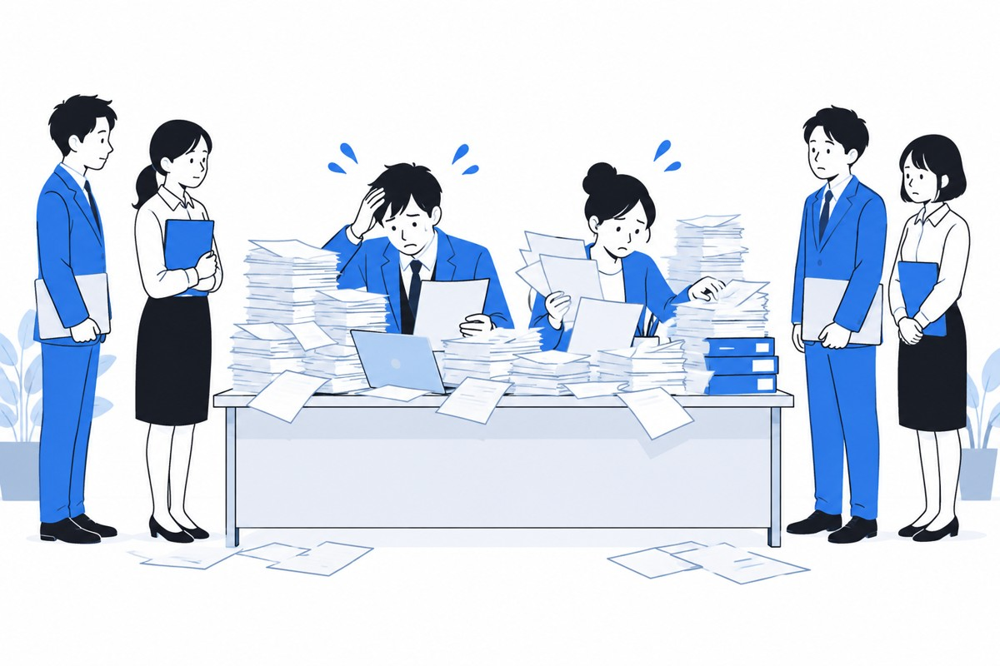
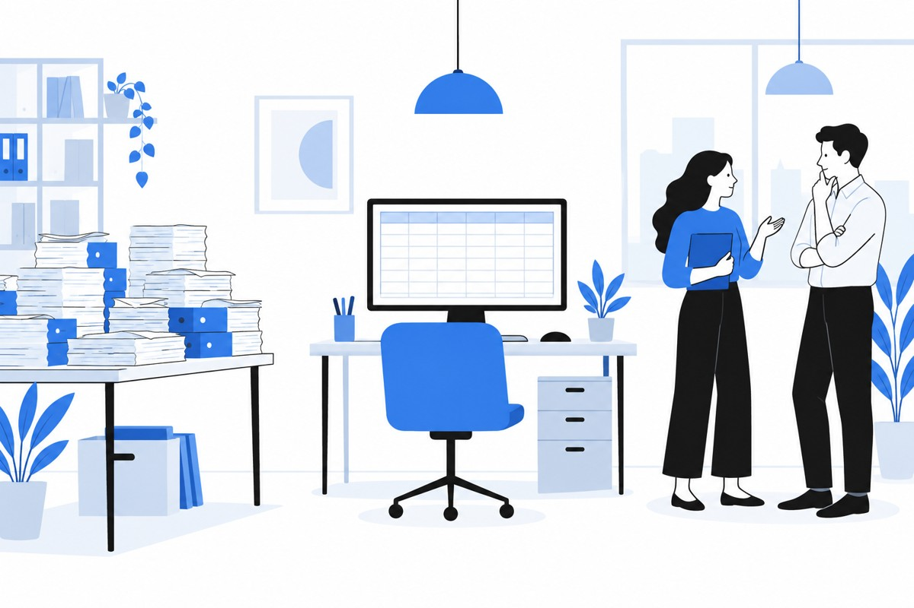
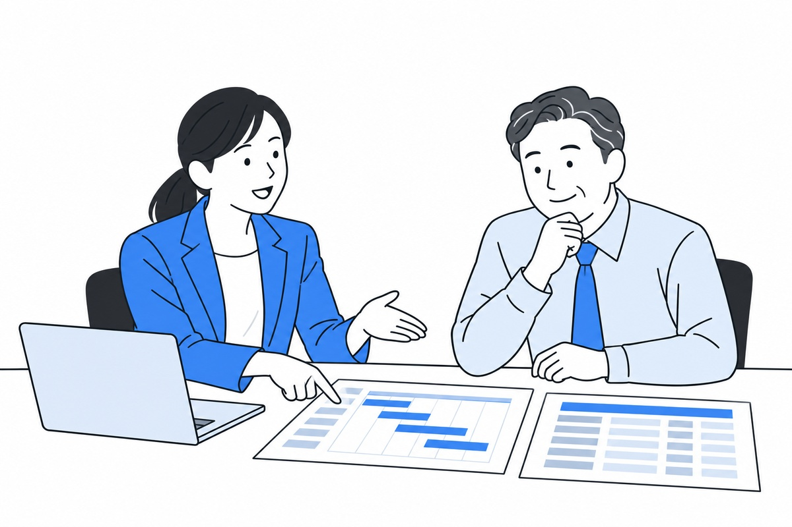
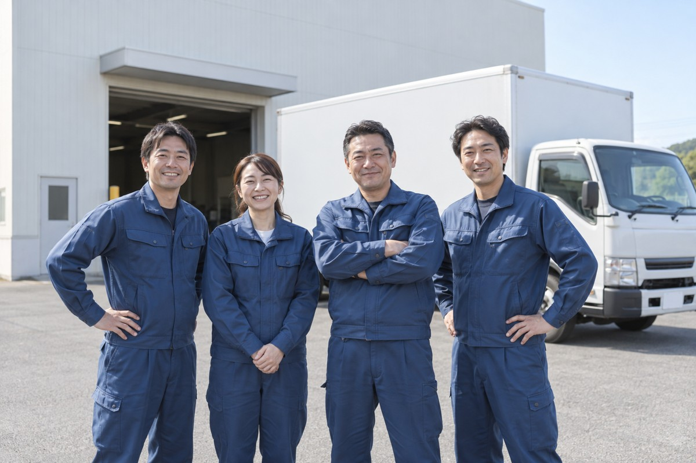

確認が、
社長に集まる
判断・承認が経営者に集中し、売上が伸びるほど業務が詰まる。気づけば現場が止まる原因が自分になっている。
7業種
対応業種
兵庫・大阪
対応地域
2週に1回
現場伴走の頻度
30万円→ 0円
初期構築費（年間契約の場合）
よくあるお悩み
採用費・人件費・外注費・残業代。費用が増えるほど、利益は薄くなります。この構造こそが、AIで変えられる問題です。
判断・承認が経営者に集中し、売上が伸びるほど業務が詰まる。気づけば現場が止まる原因が自分になっている。

採用しても管理工数が減らず、教育の費用がかさむ。人手は増えたのに、利益改善につながらない。

情報がバラバラで、特定の人がいないと業務が止まる。引き継ぎも属人化し、ノウハウが蓄積されない。
AI Linqsのサービス区分け
「AIを入れた」だけでは、利益は変わりません。御社の状況に合わせて3つの関わり方を使い分け、利益改善を最短で実現します。
AIをどう使えばいいか分からない段階から、御社の担当者自身が使いこなせるようになるまで伴走します。外部への依存を減らし、社内の「AI人材」を育てます。
ゴール御社の担当者がAIを自分で使いこなせる状態
右腕AIを設計・導入したあとも、2週間に1回現場に入り、課題を一緒に解きながら定着・改善を続けます。「入れて終わり」にしない継続支援です。
ゴール御社の現場でAIが使い続けられる状態
社内アプリ・業務システム・AIによる自動化の開発を、AI Linqsが実装して納品します。「動くシステム」として御社の業務に組み込み、外注費・管理の費用を構造から減らします。
ゴール動くシステムを納品し、外注していた業務を社内へ
サービスの全体像
まずは研修から始め、必要に応じて業務改善・システム開発へと広げられます。
ChatGPT・Claudeなどの生成AIを、現場の実務で使えるところまで習得。経営者の言葉に合わせて内容を設計し、半年12回 または 2日間合宿で「使える人材」を育てます。
料金
396,000円／人（税別）
助成金が認められた場合の試算：
実質 99,000円／人
メール返信・シフト管理・確認業務・資料作成など、繰り返しの業務を右腕AIが代替。初期設計のあとも2週間に1回現場に入り、定着・改善を続けます。
「見込みがなければ、始める前にそうお伝えします。」
月額料金
18万円／月
現場伴走・保守・機能改善込み
相談中心プラン：月7万円LINE相談・オンライン中心
会社全体の業務を整理し、既存システムの調整や専用の仕組みの開発を行います。紙・Excel運用の完全デジタル化、外注していた業務の内製化を実現し、外注費・管理の費用を構造から減らします。
料金
50万円〜
業務範囲・規模により個別にお見積もり
※ 助成金（人材開発支援助成金）は「認められた場合の試算」です。受給を保証するものではありません。
AI導入が、利益に出る
AIで変えられるのは、採用費だけではありません。正しく設計すれば、4つの角度から利益改善が見込めます。
右腕AIが反復業務を代替し、採用の費用と教育の手間を削減。人を増やさずに業務が回る体制をつくります。
外部委託していた資料作成・データ整理・管理業務を内製化し、外注費を圧縮。開発にかかる費用も長期的に下がります。
業務の自動化により残業時間を削減。固定費として重くなっていた人件費の構造を改善します。
管理・確認業務をAIが担うことで、経営者・営業担当が「人にしかできない仕事」に集中できる時間を生み出します。
効果は業種・業務範囲・組織の規模によって変わります。だからこそ、契約の前に、御社の採用費・外注費・残業・取りこぼしの実態から試算します。
「見込みがなければ、
始める前にそうお伝えします。」AI Linqs のお約束
選ばれる理由
まずお話を伺い、採用費・外注費・残業・取りこぼしの4点から効果を試算します。見込みがなければ、始める前にそうお伝えします。安心してご相談ください。
紙や口頭、Excelが中心でも大丈夫です。「うちはまだ紙がメインで」という会社こそ、伸びしろがあります。今のやり方を否定せず、現場に合わせて設計します。
資料を渡して終わりにしません。ご契約後は2週間に1回お伺いし、いまの課題をお聞きして解決策を一緒に見つけます。御社に合わせたオーダーメイドの仕組みを、一緒につくります。
ご相談からの流れ
費用はかかりません。準備も不要です。次の4点を中心にお聞きします。
お聞きした内容をもとに、どの業務から手をつけると効果が大きいかを整理します。
「利益改善が見込めない場合は、始める前にそうお伝えします。」

何を、どの順番で、どのくらいの期間・費用で進めるかを工程表でお見せします。費用対効果をご確認いただいてから、ご判断ください。無理な売り込みはしません。

内容と費用にご納得いただいてから、ご契約となります。ご契約後は2週間に1回お伺いし、定着するまで隣で伴走します。研修・伴走・代行の組み合わせは、御社の状況に合わせて柔軟に設計します。
導入事例
運送・自動車関連をはじめ、現場のある会社を業種を問わず支援しています。

確認の工数 月時間 削減数字は先方に確認中です
バラバラだった情報を一つに連携。確認の手間が大きく減り、人を増やさずに業務が回る体制に。

シフト作成 時間 → 分数字は先方に確認中です
マニュアルと業務の流れを共有できるアプリを構築。シフト作成も自動化し、作業時間を大幅に削減。
資料作成・数値分析を自動化数字は先方に確認中です
資料作成・数値分析・定期作業を自動化し、社内でAIを使いこなす力が向上。
※ 写真はイメージです。
私たちの考え方
AIに任せられることはAIに任せ、人は、人にしかできない仕事に力を注ぐ。働きがいが高まり、生産性が上がり、会社に利益が残っていく。それが、AI Linqs の考える「人とAIのハイブリッド経営」です。

よくある質問